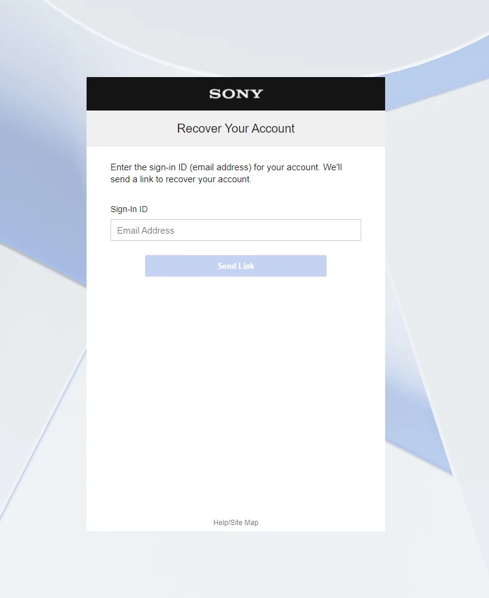
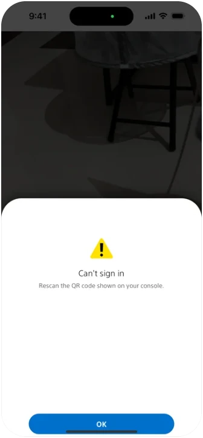

Решение проблем
Найдите свой вопрос в списке или воспользуйтесь поиском.
Чаще всего спрашивают
Вход на сайте PlayStation
Сброс пароля, письма и ошибки входа на сайте.
Ошибка «Неправильный логин и/или пароль»
PlayStation показывает эту ошибку при первом входе с нового устройства или из другой страны. Чтобы войти, сбросьте пароль, а затем настройте свой 2FA:
- Откройте страницу сброса пароля или выполните шаг 2 инструкции.
- Введите почту из заказа.
- Откройте письмо от PlayStation и перейдите по ссылке.
- Укажите дату рождения из заказа.
- Задайте новый пароль и сохраните его.
- Войдите с новым паролем и настройте 2FA — инструкция.

Ошибка «Не удалось подключиться к серверу»
Эта ошибка связана с вашим интернет-подключением, а не с аккаунтом. Попробуйте:
- Открыть сайт в другом браузере, например в Microsoft Edge.
- Включить VPN. Чтобы проверить, что он работает, откройте whatismyipaddress.com — там должна быть указана страна VPN-сервера.
- Если VPN нет — подключить прокси и проверить его так же.
Не приходит письмо для сброса пароля
- Подождите 2–3 минуты и проверьте папку «Спам» (Junk).
- Проверьте, что почта введена точно как в заказе, без пробелов.
- Если письма всё ещё нет, запросите его повторно (шаг 2).
Где взять дату рождения?
Она указана в сообщении заказа на FunPay. Вводите её точно в таком же виде.
Забыл новый пароль от PlayStation
Сбросьте пароль ещё раз по шагам 2–5 — письмо придёт на почту из заказа.
2FA и коды
Коды из заказа, Google Authenticator и резервные коды.
Что такое 2FA и зачем он нужен?
2FA (двухфакторная аутентификация) — это вход в аккаунт по паролю и одноразовому коду из приложения на телефоне. Без кода войти нельзя, даже если кто-то узнает пароль. PlayStation требует 2FA для входа, поэтому его нужно настроить.
Как настроить 2FAНе подходит код из Google Authenticator
- Проверьте, что на телефоне включены автоматические дата и время — от них зависят коды.
- Вводите код, пока он не сменился: новый появляется каждые 30 секунд.
- Если в приложении несколько аккаунтов, берите код из записи PlayStation.
Не подходят коды 2FA из заказа
Каждый код одноразовый. Попробуйте следующий код из списка. Если не подошёл ни один, напишите продавцу в чат заказа.
Потерял телефон или удалил Google Authenticator
- Войдите на сайте PlayStation с резервным кодом: Trouble Receiving Code? → Sign In Using a Backup Code.
- Отключите 2FA и включите его заново уже на новом телефоне (шаги 8–11).
Где найти резервные коды и что делать, если они закончились?
Пока у вас есть доступ к аккаунту, коды можно посмотреть на сайте PlayStation: Настройки учетной записи → Безопасность → Backup Codes. Если коды закончились, отключите и снова включите 2FA — PlayStation выдаст 10 новых.
Как перенести 2FA на новый телефон?
Войдите на сайте PlayStation, отключите 2FA и включите его снова, отсканировав QR-код новым телефоном (шаги 8–11). Не удаляйте приложение со старого телефона, пока не закончите.
Вход на консоли
PlayStation App, QR-код и подключение консоли.
Приложение пишет «Can’t sign in»
Код на экране консоли устарел — он периодически обновляется. Отсканируйте QR-код ещё раз или введите новые цифры (шаг 15).

На консоли не появляется QR-код
QR-код показывается на экране входа в аккаунт PlayStation Network. Выберите на консоли вход в аккаунт — например, «Добавить пользователя» → «Войти». Подробнее — шаг 14.
PlayStation App не открывает камеру
Разрешите приложению доступ к камере в настройках телефона. Или введите код вручную: Enter Code Manually (шаг 15).
Консоль не подключается к PlayStation Network
- Перезагрузите консоль и роутер.
- По возможности подключите консоль кабелем, а не по Wi-Fi.
- Обновите системное ПО консоли.
Игры с аккаунта не запускаются на консоли
Сделайте эту консоль основной для аккаунта:
- PS5: Settings → Users and Accounts → Other → Console Sharing and Offline Play → Enable.
- PS4: Settings → Account Management → Activate as Your Primary PS4.
Почта
Почта Outlook и запасная почта.
Не получается войти в почту: ошибка «Try different method»
Ваше интернет-подключение не может соединиться с серверами Microsoft. Включите VPN или войдите через приложение Outlook на компьютере или телефоне.
Я добавил запасную почту. Куда придёт код?
На ту почту, которую вы указали как запасную.
У почты уже есть запасная. Как в неё войти?
Откройте firstmail.ltd/webmail/login и введите данные запасной почты из заказа. Подробнее — в инструкции по почте.
Забыл пароль от почты Outlook
Сбросьте его на странице Microsoft. Код подтверждения придёт на запасную почту, которую вы добавили (шаг 3 инструкции по почте). Если доступа к ней нет — напишите продавцу.
Безопасность
Как защитить аккаунт.
Мне прислали QR-код и просят его отсканировать
Как выйти из аккаунта на всех устройствах?
На сайте PlayStation откройте Настройки учетной записи → Безопасность — там есть выход со всех устройств. Также можно сменить пароль: консоли, к которым у вас нет доступа, выйдут из аккаунта.
Можно ли указать для PlayStation почту Mail.ru или Яндекс?
Не рекомендуем: из-за российских почтовых сервисов (Mail.ru, Яндекс, Rambler, Firstmail) Sony может заблокировать аккаунт. Используйте Gmail, Outlook или другую международную почту.
Ничего не найдено. Попробуйте другие слова или напишите нам.
Не нашли ответ?
Напишите продавцу в чат заказа
Продавец поможет разобраться. Чтобы ответ пришёл быстрее, добавьте в сообщение три вещи:
Открыть FunPayСсылку на шаг даёт кнопка 🔗 у каждого шага и ответа.
Пример хорошего сообщения
Здравствуйте! Застрял на шаге 6 — при входе пишет ошибку.
 скриншот.png248 KB
скриншот.png248 KBУже пробовал: другой браузер и VPN.